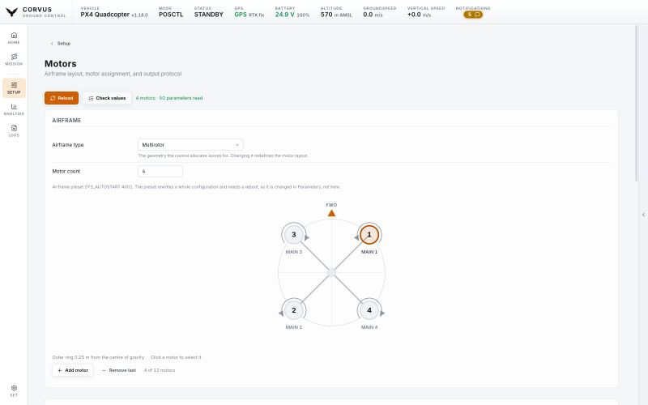

Set up
Airframe and motors
The Motors page draws your airframe to scale, with every motor where it really is, and lists the same motors in a table beside the drawing: wire them, move them or spin one on the bench. The same page sets the frame size, the positions of the flight controller and GPS antenna, and the ESC output protocol.


The Setup pages
Setup in the left rail opens a vehicle card and one tile per job: Calibration, Radio Control, PID Tuning, Motors, Safety & Sensors, Battery & Power, Telemetry Radio, RTK GPS, Remote ID, Parameters, Firmware and Video. Each page reads only the parameters it shows, so it opens in about a second even over a slow radio, and only shows what the connected firmware actually has. A setting your board does not carry is one row fewer, never an error. A page opened without a vehicle says Not connected beside its buttons and reads itself as soon as the link is up.
Every field is written the moment you change it, one at a time, and counts as written only when the aircraft confirms it. All of them are read only while the aircraft is armed.
The drawing
Every motor sits at its real distance from the centre of gravity, with its number, its output and a spin direction arrow, so "the front left one" is something you point at instead of work out. The body behind the motors follows the airframe class:
- arms for a multirotor,
- a wing and tail for a plane,
- booms and a wing for a quadplane,
- a rotor disc and tail boom for a helicopter,
- a chassis for a rover.
A rotor that pushes rather than lifts (a VTOL's pusher, a plane's tractor) is drawn with a thrust arrow instead of a boom, read from its own axis parameters. PX4 stores no wingspan, so the outline is schematic and the page says so; only the motors are measured.
Motor outputs
Every motor is one row of the table beside the drawing, so the whole airframe is read at once and two motors are compared down a column. Each row sets:
- Which output drives it: one list of every pin on the board, MAIN, AUX, DroneCAN, or the simulated ESCs of a Gazebo SITL airframe.
- Its position and rotation direction.
- The limits of its output: minimum, maximum, disarmed and failsafe values, which current PX4 keeps per output rather than per header.
Clicking a row or a motor on the drawing selects that motor in both places. It is the one the motor test spins.
Picking a pin that already has a motor on it swaps the two, which is the one click fix for crossed motors. Picking a pin that drives a servo is refused by name rather than silently taken. A motor wired to nothing is flagged on the drawing.
The airframe type and the motor count sit on the airframe card, next to the picture they change. Adding or removing a motor, at the top of the table, redraws it.
Frame size and sensor positions
How far apart the motors are, measured the way a frame is named: the diagonal (a "450" frame is 450 mm motor to motor), front to back, and left to right. Changing one rescales every lift rotor at once and keeps the layout's shape.
The flight controller and the GPS antenna are drawn on the same airframe at their offset from the centre of gravity, and set under the frame size, one row per sensor with forward, right and down. PX4 1.18 moved the antenna offset to one set per receiver and ArduPilot 4.6 renamed it; the page writes whichever the aircraft has. ArduPilot mixes a fixed layout per frame type, so there the frame size is explained rather than offered.
Motor test
Spin one motor on the bench to find out which one it is.
Remove the propellers first. The button stays disabled until you confirm that you have.
- Refused while armed.
- The throttle stops at half.
- The duration is limited on the vehicle, so the motor stops even if the link dies.
- Leaving the page stops a running motor.
On PX4 the test uses MAV_CMD_ACTUATOR_TEST; ArduPilot uses
DO_MOTOR_TEST. The page picks the right one.
Output protocol
DShot150, DShot300, DShot600, OneShot or a plain PWM rate, per timer group, and the DShot minimum. Only what the connected firmware reports is shown, so the page is correct across firmware versions and across both flight stacks rather than offering settings your board does not have.
ESC calibration
On PX4, ESC calibration sits behind a safety confirmation, because the motors are driven to full output during it.
Remove the propellers first. ESC calibration is refused while armed.
ArduPilot calibrates ESCs by setting ESC_CALIBRATION and
rebooting with the throttle high, which is not something a ground station
should put behind a button, so it is not offered there. The page says so.
Check values
A write can be lost on a radio or refused by the aircraft. Check values, on this page and on Safety & Sensors, PID Tuning, Radio Control, Battery & Power and Remote ID, reads every field back from the aircraft (never from Corvus's own copy), writes again whatever you set that did not stick, and redraws the page from what the aircraft holds now, with the outcome listed field by field.